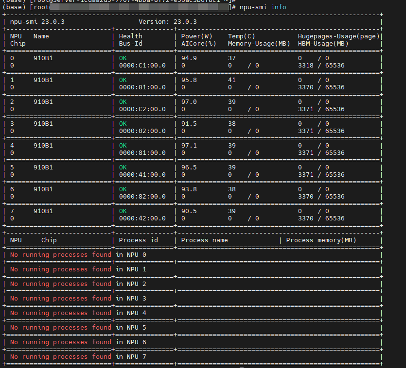
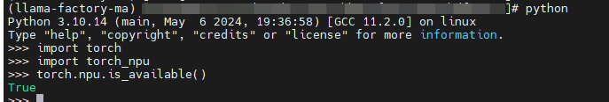

NPU安装及配置
LLaMA-Factory 支持华为昇腾 NPU (A2/A3) 设备。您可以选择以下三种方式之一进行环境配置及使用：
核心依赖说明
所有安装方式均依赖以下组件：
HDK：固件及驱动
CANN：异构计算架构
torch_npu：PyTorch 的昇腾适配插件
根据安装方式不同，所需操作有所区别：
手动安装：需手动安装 HDK、CANN 和 torch_npu。
Docker 镜像/构建：宿主机仅需安装 HDK (驱动/固件)，CANN 和 torch_npu 已集成在镜像中。
方式一：手动安装环境
本方式需要您手动安装 HDK、CANN 和 torch_npu。
1. 版本及下载链接
本文档列举了最新的依赖版本及下载链接，请根据设备型号选择：
备注
具体需要安装的包可查看下文实际安装指南。
torch_npu下载链接跳转页面，请点击所需的 PyTorch 版本的“获取源码”，链接将自动跳转至 torch_npu 发行版本 指定界面。推荐使用
torch 2.7.1+python 3.11，该组合作为torch_npu的稳定版本长期演进
2. 驱动及固件
请根据实际情况选择 .run 或 .deb 的 HDK 安装包，并请注意安装包对 aarch64 和 x86 做了区分。
以下以 A2 系列为例。A3 系列包 firmware 和 driver 包名有所变化，可以根据链接内实际情况选择。
A3 内部包名类似于 Atlas-A3-hdk-npu-driver_25.0.rc1.3_linux-aarch64.run 和 Atlas-A3-hdk-npu-firmware_7.7.0.3.228.run，实际安装方式没有变化。
上传安装包，以 root 用户登录，将驱动和固件包上传至服务器（如
/home）。增加执行权限，进入安装包目录，执行以下命令。
chmod +x Ascend-hdk-<chip_type>-npu-driver_<version>_linux-<arch>.run chmod +x Ascend-hdk-<chip_type>-npu-firmware_<version>.run
安装驱动与固件，默认安装路径为
/usr/local/Ascend。安装驱动：
./Ascend-hdk-<chip_type>-npu-driver_<version>_linux-<arch>.run --full --install-for-all
出现
Driver package installed successfully!表示成功。安装固件：
./Ascend-hdk-<chip_type>-npu-firmware_<version>.run --full出现
Firmware package installed successfully!表示成功。备注
若未创建默认用户
HwHiAiUser，需在安装命令中指定用户和组：./Ascend-hdk-*.run --full --install-username=<username> --install-usergroup=<usergroup>重启系统，根据提示决定是否重启。如需重启：
reboot
验证安装，执行以下命令查看驱动加载状态：
npu-smi info
3. CANN
请根据实际情况选择 .run 或 .deb 的 CANN 安装包，并请注意安装包对 aarch64 和 x86 做了区分。
以下以 A2 系列为例。A3 系列唯一区别是 kernels 包名字有所变化，可以根据链接内实际情况选择。A3 内部包名类似于 Atlas-A3-cann-kernels_8.3.RC1_linux-aarch64.run，实际安装方式没有变化。
(1) 安装 Toolkit 开发套件
Toolkit 用于训练、推理及开发。
备注
请确保安装目录可用空间大于 10G。
授权与安装：以 root 用户安装，默认安装路径为
/usr/local/Ascend；以普通用户安装，默认安装路径为${HOME}/Ascend。chmod +x Ascend-cann-toolkit_<version>_linux-aarch64.run ./Ascend-cann-toolkit_<version>_linux-aarch64.run --install
配置环境变量：以 root 用户为例，建议写入
~/.bashrc。source /usr/local/Ascend/ascend-toolkit/set_env.sh
(2) 安装 Kernels 算子包
需在安装 Toolkit 后执行。如需安装静态库，请将 --install 改为 --devel。
chmod +x Ascend-cann-kernels-<chip_type>_<version>_linux-aarch64.run
./Ascend-cann-kernels-<chip_type>_<version>_linux-aarch64.run --install
(3) 安装 NNAL 神经网络加速库（可选）
包含 ATB 和 SiP 加速库。需在安装 Toolkit 后执行。
授权与安装：
chmod +x Ascend-cann-nnal_8.3.RC1_linux-aarch64.run ./Ascend-cann-nnal_8.3.RC1_linux-aarch64.run --install
配置环境变量：
（二选一，不可同时配置）
# ATB source ${HOME}/Ascend/nnal/atb/set_env.sh # SiP source ${HOME}/Ascend/nnal/asdsip/set_env.sh
4. torch-npu
建议在安装 LLaMA-Factory 时一并安装 torch-npu 插件，LLaMA-Factory 依赖内会持续更新稳定版本的 torch-npu 插件。
pip install -r requirements/npu.txt
当然您也可以手动下载后安装 torch-npu 插件，例如：
pip install torch_npu-2.7.1-cp311-cp311-manylinux_2_17_aarch64.whl
安装 torch-npu 插件需要注意：
下载的
torch_npu会对支持的 Python 版本做区分，请根据实际环境情况选择对应安装包，pip install torch_npu时，也会一并安装对应版本的torch。环境里安装的
torch-npu和torch版本需要对齐。例如torch-npu版本为2.7.1时，torch的版本也需要为2.7.1。有时依赖互斥，安装不用依赖的过程会导致torch版本被更新，从而导致报错。
5. 验证安装
执行以下 Python 脚本：
import torch
import torch_npu
print(torch.npu.is_available())
预期输出：True

该情况说明 HDK、CANN 和 torch_npu 都正常安装且生效。
方式二：Docker 预安装镜像
备注
请确保宿主机已安装固件和驱动，可参考前文进行安装。
LLaMA-Factory 的官方镜像托管于 Docker Hub 和 quay.io，二者镜像无区别。
1. 拉取镜像
下载 main 分支最新镜像（请根据设备选择 A2 或 A3）。如需特定版本镜像，请访问镜像仓库查看 Tag。
# Docker Hub
docker pull hiyouga/llamafactory:latest-npu-a2
docker pull hiyouga/llamafactory:latest-npu-a3
# quay.io
docker pull quay.io/ascend/llamafactory:latest-npu-a2
docker pull quay.io/ascend/llamafactory:latest-npu-a3
2. 启动容器
使用以下命令启动容器（请根据实际情况修改 DOCKER_IMAGE 和 device）：
CONTAINER_NAME=llama_factory_npu
DOCKER_IMAGE=hiyouga/llamafactory:latest-npu-a2
docker run -itd \
--cap-add=SYS_PTRACE \
--net=host \
--device=/dev/davinci0 \
--device=/dev/davinci1 \
--device=/dev/davinci2 \
--device=/dev/davinci3 \
--device=/dev/davinci4 \
--device=/dev/davinci5 \
--device=/dev/davinci6 \
--device=/dev/davinci7 \
--device=/dev/davinci_manager \
--device=/dev/devmm_svm \
--device=/dev/hisi_hdc \
--shm-size=1200g \
-v /usr/local/sbin/npu-smi:/usr/local/sbin/npu-smi \
-v /usr/local/dcmi:/usr/local/dcmi \
-v /etc/ascend_install.info:/etc/ascend_install.info \
-v /sys/fs/cgroup:/sys/fs/cgroup:ro \
-v /usr/local/Ascend/driver:/usr/local/Ascend/driver \
-v /data:/data \
--name "$CONTAINER_NAME" \
"$DOCKER_IMAGE" \
/bin/bash
备注
配置 --privileged=true 可开启特权模式，赋予容器对底层硬件管理设备（如 /dev/davinci_manager）的完整访问权限。这能解决多容器并行场景下，因权限限制导致的驱动初始化失败问题，确保 NPU 资源能被多个容器正常复用。
注意：若未配置该参数，可能会出现首个容器占用后，后续容器因无权限而无法读取设备的情况。鉴于特权模式的权限过大，生产环境中请务必评估安全风险后慎重使用。
3. 进入容器
docker exec -it llama_factory_npu bash
备注
通过 --device /dev/davinci<N> 挂载指定 NPU 卡（支持 0-7）。容器内设备编号会自动重新映射（例如物理机 davinci6 代表容器内设备 0）。
进入容器后，可直接使用 llamafactory-cli train 启动训练，无需额外配置。
方式三：Docker 本地构建
备注
请确保宿主机已安装固件和驱动。
LLaMA-Factory 提供 1. 使用 Docker Build 构建 和 2. 使用 Docker Compose 构建 两种构建方式。
1. 使用 Docker Build 构建
构建镜像，在项目根目录下执行：
# Ascend-A2 docker build -f ./docker/docker-npu/Dockerfile --build-arg INSTALL_DEEPSPEED=false --build-arg PIP_INDEX=https://pypi.org/simple -t llamafactory:latest . # Ascend-A3 docker build -f ./docker/docker-npu/Dockerfile --build-arg BASE_IMAGE=quay.io/ascend/cann:8.3.rc2-a3-ubuntu22.04-py3.11 --build-arg INSTALL_DEEPSPEED=false --build-arg PIP_INDEX=https://pypi.org/simple -t llamafactory:latest .
备注
可修改 BASE_IMAGE 参数指定其他 CANN 版本（参考 ascend/cann ）。
启动容器
CONTAINER_NAME=llama_factory_npu DOCKER_IMAGE=llamafactory:latest docker run -itd \ --cap-add=SYS_PTRACE \ --net=host \ --device=/dev/davinci0 \ --device=/dev/davinci1 \ --device=/dev/davinci2 \ --device=/dev/davinci3 \ --device=/dev/davinci4 \ --device=/dev/davinci5 \ --device=/dev/davinci6 \ --device=/dev/davinci7 \ --device=/dev/davinci_manager \ --device=/dev/devmm_svm \ --device=/dev/hisi_hdc \ --shm-size=1200g \ -v /usr/local/sbin/npu-smi:/usr/local/sbin/npu-smi \ -v /usr/local/dcmi:/usr/local/dcmi \ -v /etc/ascend_install.info:/etc/ascend_install.info \ -v /sys/fs/cgroup:/sys/fs/cgroup:ro \ -v /usr/local/Ascend/driver:/usr/local/Ascend/driver \ -v /data:/data \ --name "$CONTAINER_NAME" \ "$DOCKER_IMAGE" \ /bin/bash
备注
配置 --privileged=true 可开启特权模式，赋予容器对底层硬件管理设备（如 /dev/davinci_manager）的完整访问权限。这能解决多容器并行场景下，因权限限制导致的驱动初始化失败问题，确保 NPU 资源能被多个容器正常复用。
注意：若未配置该参数，可能会出现首个容器占用后，后续容器因无权限而无法读取设备的情况。鉴于特权模式的权限过大，生产环境中请务必评估安全风险后慎重使用。
进入容器
docker exec -it llama_factory_npu bash
2. 使用 Docker Compose 构建
进入目录
cd docker/docker-npu
构建镜像并直接启动容器，请根据设备型号选择命令：
# Ascend-A2
docker-compose up -d
# Ascend-A3
docker-compose --profile a3 up -d llamafactory-a3
进入容器
docker exec -it llamafactory-a2 bash
备注
构建前，请检查 docker-compose.yml 中的 devices 列表，当前构建时只会挂卡 0，请根据需要做修改。